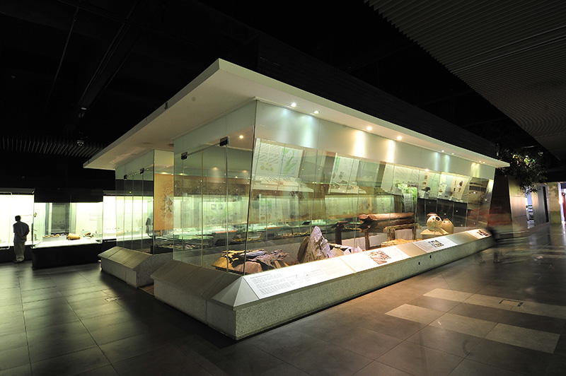
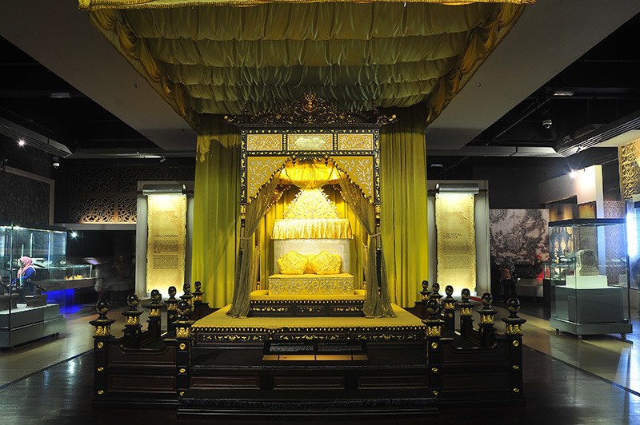

Gallery A: Pre History
This gallery takes the visitors on an exploration of the process behind the Earth’s formation as well as provides an insight into early civilization through each of the artifacts that are displayed here. Visitors also have the opportunity to learn the evolution of stone tools used during the Paleolithic, Hoabinhian and Neolithic Age. Among the highlight artefact is the replica of Perak Man, the oldest and near intact human skeleton in South East Asia found in this country approximately 10,000 – 11,000 years ago.

Gallery B: Malay Kingdoms
This gallery traces the development of Malay civilization through the formation of the Malay Kingdoms in the Malay Archipelago, particularly the kingdoms that existed in the Malay Peninsular and Borneo Islands. The focus of this gallery is primarily on the Malay Melaka Sultanate, which was the golden period in the history of the Malay-Islamic civilization in this region. Artefact of the Avalokiteshvara statue, recognized as the National Heritage Artefact in 2009 is among the important collection exhibited in this gallery.